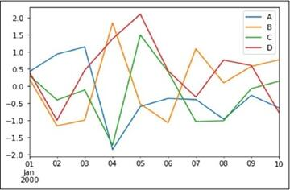

La Computación Gráfica
¿Qué es la computación gráfica?
La computación gráfica es el campo de la informática visual, donde se utilizan computadoras para generar imágenes visuales y espaciales del mundo real. También podemos definirlo como el arte de transmitir información usando imágenes que son generadas mediante la computación.
Objetivo: Proporcionar un contexto dentro del cual se desarrolla la actividad del Cómputo Gráfico, abarcando aspectos históricos y tecnológicos, para así comprender la importancia de esta área de desarrollo.
En la actualidad, los gráficos por computador se emplean en una gran variedad de aplicaciones, como en interfaces gráficas de usuario, tipografía digital, paseos arquitectónicos virtuales, aplicaciones médicas y juegos de vídeo, entre otras. La computación gráfica comprende una gran variedad de técnicas que pueden ser agrupadas de acuerdo al número de dimensiones que se empleen en la representación del modelo geométrico a visualizar, en 2D y 3D
Computación gráfica 2D
La computación gráfica 2D corresponde al conjunto de técnicas que tienen como objeto la generación de una imagen digital a partir de modelos geométricos bidimensionales. Estas técnicas son principalmente empleadas en interfaces gráficas de usuario y en aplicaciones desarrolladas a partir de tecnologías de impresión y dibujo, como tipografía, cartografía y dibujo técnico, entre otras. El origen de las mismas se remonta a la década de los 50's en la que aparecieron dispositivos con soporte para gráficos vectoriales.

Computación gráfica 3D
La computación gráfica 3D trata acerca de la síntesis de una imagen bidimensional a partir de un modelo geométrico tridimensional. De acuerdo con la complejidad de los cálculos empleados en la generación de las imágenes, las técnicas se clasifican en prerendering y real-time rendering.